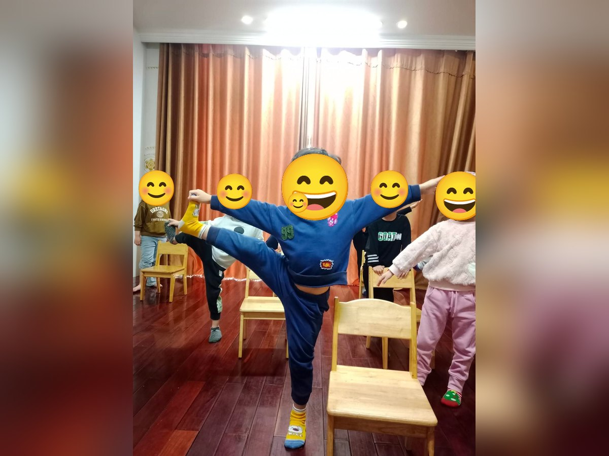

Chủ đề 47 · Nghề nghiệp
Một ngày làm nghề
🌟 Bài học trong câu chuyện
Giới luật yoga: Ishvara Pranidhana – Biết ơn và tin tưởng. Bé biết nói lời cảm ơn và tin vào những điều tốt đẹp.
Kỹ năng sống: Biết các nghề, biết ơn người lao động.
1. Khởi động (2 phút)
Cả lớp ngồi xếp bằng thành vòng tròn. Cùng thở 3 hơi thở bông hoa: hít vào bằng mũi như ngửi hoa, thở ra bằng miệng thật chậm. Chắp tay trước ngực và chào nhau: “Namaste, chào các bạn!”
2. Câu chuyện: Một ngày làm nghề (đọc cho bé nghe, 4 phút)
Cô đọc trọn câu chuyện cho bé nghe trước. Sau đó cô kể lại từng đoạn ngắn và cả lớp cùng tập 10 tư thế ở phần bên dưới.
Bé Ken hay thắc mắc: "Ai làm ra cơm mình ăn? Ai chữa bệnh cho mình? Ai dập lửa khi có đám cháy?". Mẹ bảo: "Con đi gặp các cô chú làm nghề sẽ biết".
Ken đến bệnh viện, bác sĩ đặt ống nghe lên ngực Ken, nghe tim đập "thình thịch". Ken đến trạm cứu hỏa, chú lính cứu hỏa cầm vòi phun nước "xèo xèo" dập lửa. Ra sân bay, cô phi công lái máy bay đưa mọi người đi xa.
Về quê, Ken thấy bác nông dân cúi lưng cấy lúa ngoài đồng, để mọi người có cơm ăn. Trong bếp nhà hàng, cô đầu bếp khuấy nồi canh thơm phức. Ở công trường, chú thợ xây đặt từng viên gạch xây nhà. Ngoài biển, chú thủy thủ lái tàu đi đánh cá.
Ken còn gặp cô họa sĩ vẽ những bức tranh cầu vồng, chị ca sĩ hát thật hay, và cô vũ công múa thật đẹp.
Tối về, Ken kể cho mẹ nghe tất cả. Ken nói: "Mỗi nghề đều giúp mọi người. Con cảm ơn các cô chú". Mẹ hỏi: "Lớn lên con muốn làm nghề gì?". Ken nghĩ mãi: "Con muốn làm nhiều nghề lắm!"
3. Kể lại và tập 10 tư thế (6 phút)
-
 1
1Bác sĩ nghe tim
🧘 Tư thế Lạc đà (Camel)
Lời kể khi tập: Bác sĩ nghe tim Ken "thình thịch". "Cảm ơn bác sĩ!"
Cách làm: Quỳ đứng, hai tay chống hông hoặc chạm gót chân như trong ảnh, nhẹ nhàng ưỡn ngực và nhìn lên trời. Giữ 3 đến 5 nhịp thở.
-
 2
2Lính cứu hỏa phun nước
🧘 Tư thế Chiến binh 2 (Warrior 2)
Lời kể khi tập: Chú lính cứu hỏa phun nước dập lửa. "Xèo xèo!"
Cách làm: Bước một chân dài ra trước, gập gối trước, chân sau duỗi thẳng, hai tay vươn cao (hoặc dang ngang), đứng vững như chiến binh. Giữ 3 đến 5 nhịp thở.
-
 3
3Phi công
🧘 Tư thế Máy bay (Warrior 3)
Lời kể khi tập: Cô phi công lái máy bay đưa mọi người đi xa.
Cách làm: Đứng trên một chân, nghiêng người về trước, chân kia duỗi thẳng ra sau, hai tay dang như cánh máy bay. Cô có thể đỡ nhẹ chân sau giúp bé giữ thăng bằng như trong ảnh, hoặc bé vịn tường. Giữ 3 đến 5 nhịp thở.
-
 4
4Bác nông dân cấy lúa
🧘 Tư thế Gập người đứng (Forward Fold)
Lời kể khi tập: Bác nông dân cúi cấy lúa để mình có cơm ăn.
Cách làm: Đứng, gối hơi chùng, cúi gập người, hai tay buông thả xuống sàn. Giữ 3 đến 5 nhịp thở.
-
 5
5Đầu bếp khuấy nồi
🧘 Tư thế Ngồi xoay vòng (Seated Circles)
Lời kể khi tập: Cô đầu bếp khuấy nồi canh thơm phức.
Cách làm: Ngồi xếp bằng, tay đặt trên gối, xoay thân người thành vòng tròn, rồi đổi chiều. Giữ 3 đến 5 nhịp thở.
-
 6
6Thợ xây
🧘 Tư thế Tam giác (Triangle)
Lời kể khi tập: Chú thợ xây làm nhà cho mọi người ở.
Cách làm: Dang rộng hai chân, một tay chạm ống chân, tay kia vươn thẳng lên trời. Đổi bên. Giữ 3 đến 5 nhịp thở.
-
 7
7Thủy thủ
🧘 Tư thế Con thuyền (Boat)
Lời kể khi tập: Chú thủy thủ lái tàu ra khơi đánh cá.
Cách làm: Ngồi, co gối, ngả người ra sau một chút, nhấc hai chân lên, tay duỗi ra trước. Làm đôi như trong ảnh: hai bạn ngồi đối diện, áp bàn chân vào nhau, nắm tay nhau, cùng nhấc chân lên. Giữ 3 đến 5 nhịp thở.
-
 8
8Họa sĩ vẽ cầu vồng
🧘 Tư thế Nghiêng người hình trăng (Crescent Moon)
Lời kể khi tập: Cô họa sĩ vẽ những bức tranh đẹp.
Cách làm: Đứng thẳng, hai tay vòng lên trên đầu, nghiêng người sang một bên như vầng trăng khuyết. Đổi bên. Giữ 3 đến 5 nhịp thở.
-
9
Ca sĩ
🧘 Tư thế Thở tiếng ong (Bee Breath)
Lời kể khi tập: Chị ca sĩ hát hay "ừmmm la la".
Cách làm: Ngồi xếp bằng, nhắm mắt, hít vào bằng mũi, thở ra kêu "ừmmm" như ong bay (có thể bịt nhẹ hai tai). Giữ 3 đến 5 nhịp thở.
-

10Vũ công
🧘 Tư thế Đá chân cao (Standing Leg Kick)
Lời kể khi tập: Vũ công múa thật đẹp, đá chân thật cao. Ken cúi chào: "Cảm ơn các cô chú đã làm việc vì mọi người".
Cách làm: Đứng thẳng, hai tay dang ngang giữ thăng bằng, nhấc một chân đá thẳng lên cao sang bên, giữ một chút rồi hạ xuống. Đổi chân. Bé có thể vịn ghế. Giữ 3 đến 5 nhịp thở.
4. Thư giãn (2 phút)
Các con nằm ngửa, tay chân thả lỏng, nhắm mắt lại. Cô nói nhẹ: “Hít vào thật chậm… thở ra thật chậm… Con nhớ lại câu chuyện vừa rồi, nhớ người bạn mình thích nhất trong truyện. Cơ thể con mềm như bông, nhẹ như mây.” Sau đó các con nghiêng người, từ từ ngồi dậy.
5. Trò chuyện cùng bé (1 phút)
Mỗi nghề đều giúp ích cho mọi người, và Ken biết nói lời cảm ơn. Biết ơn là Ishvara Pranidhana.
Cô hỏi các con:
- Lớn lên con muốn làm nghề gì?
- Bố mẹ con làm nghề gì?
Kết thúc bằng lời chào “Namaste” và một nụ cười.
Lưu ý cho thầy cô và bố mẹ: Tập trên thảm, không tập ngay sau khi ăn no. Bé chỉ làm tới mức thấy dễ chịu, không ép bé. Tư thế đứng một chân có thể cho bé vịn tường hoặc vịn tay người lớn.